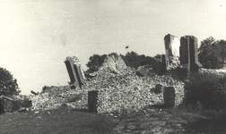
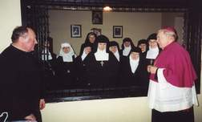

II wojna światowa i czas powojenny.
Okres pokoju został przerwany wybuchem II wojny światowej. Okupanci zaraz po wkroczeniu zajęli część klasztoru dla swojego wojska. Kilka razy groziło siostrom wysiedlenie. Stało się to w styczniu l944 r. gdy wojsko niemieckie zarekwirowało cały klasztor na szpital. Zgromadzenie przeniosło się na kapelanówkę. 15 września na rozkaz władz okupacyjnych siostry wizytki wraz z mieszkańcami opuściły Jasło, które z góry przeznaczone było przez Niemców na zniszczenie. Schronienie otrzymały u zacnych gospodarzy w Sławącinie, a następnie w Przysiekach i Siedliskach, oddalonych od Jasła o kilkanaście kilometrów. Tam też słyszały odgłosy detonacji wysadzanego klasztoru 22 grudnia i kościoła 23 grudnia 1944r. Po trzech miesiącach tułaczki siostry zamieszkały w udostępnionej im przez Siostry Bernardynki części klasztoru w Zakliczynie.

Gdy w styczniu 1945 r. przeszła zawierucha wojenna, natychmiast kilka sióstr wyruszyło do Jasła, gdzie zamieszkały w ocalonej stodole, rozpoczynając twardą próbę nowego życia wśród ruin o głodzie i chłodzie. Przerażająca była perspektywa odbudowy wielkiego rumowiska bez posiadania jakichkolwiek funduszy. Nie bez wahania Siostry podjęły tę trudną decyzję, która rzutowała w daleką, stabilną przyszłość zgromadzenia. Najpierw odbudowywano kapelanię - sierpień 1947r. Mieszkały w niej siostry przez 10 lat. Potem przyszedł czas na dźwignięcie z ruin kościoła - kwiecień 1949 r.
Nowa świątynia została poświęcona Najświętszym Sercom Jezusa i Maryi. Na końcu odbudowany został klasztor. W roku 1958 siostry przeprowadziły się do części odbudowanego klasztoru.
Budowa trwała aż do roku 1972 z powodu braku funduszów, które siostry wizytki zdobywały drogą kwestowania, ciężką pracą i kosztem wyrzeczeń osobistych potrzeb. Po roku 1960 siostry zwróciły się o pomoc do ludzi dobrej woli w USA i te ofiary przyspieszyły ukończenie budowy klasztoru i wykonanie wystroju wnętrza kościoła. W roku milenijnym 1966, dnia 25 września Jego Ekscelencja Ks. Bp. Ignacy Tokarczuk dokonał uroczystej konsekracji kościoła.
Po utworzeniu nowych diecezji w Polsce, 25 marca 1992r. klasztor nasz przynależy do diecezji rzeszowskiej. Ks. bp Ordynariusz Kazimierz Górny z całym oddaniem, po ojcowsku troszczy się o sprawy duchowe i materialne Zgromadzenia.

Z woli Bożej Zgromadzenie przeżywało trudne dzieje, ale we wszystkich okolicznościach widać było cudowne działanie Opatrzności Bożej i opiekę Matki Najświętszej. Zmarły Ksiądz Prymas Tysiąclecia zanotował: "Każda wielka miłość musi mieć swój Wielki Piątek". Nie jeden raz stawał Wielki Piątek na drodze życia sióstr związanych z klasztorem jasielskim, które oddały Bogu i ludziom całą swą miłość.